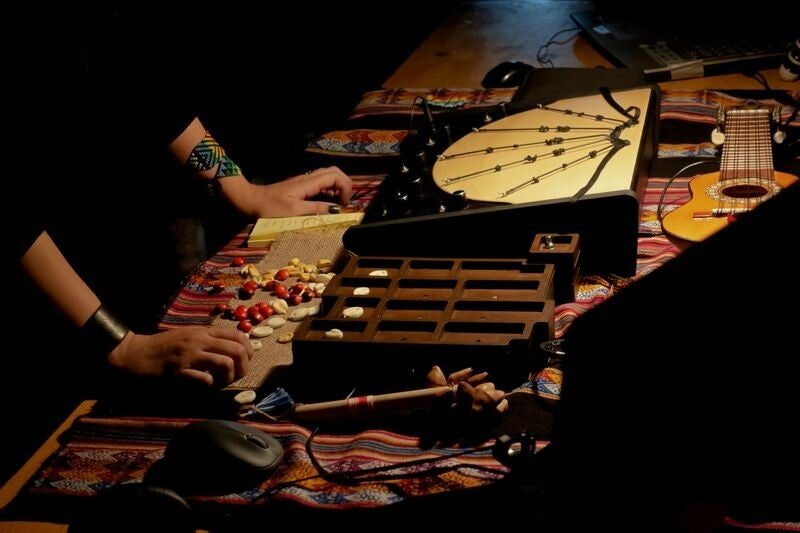
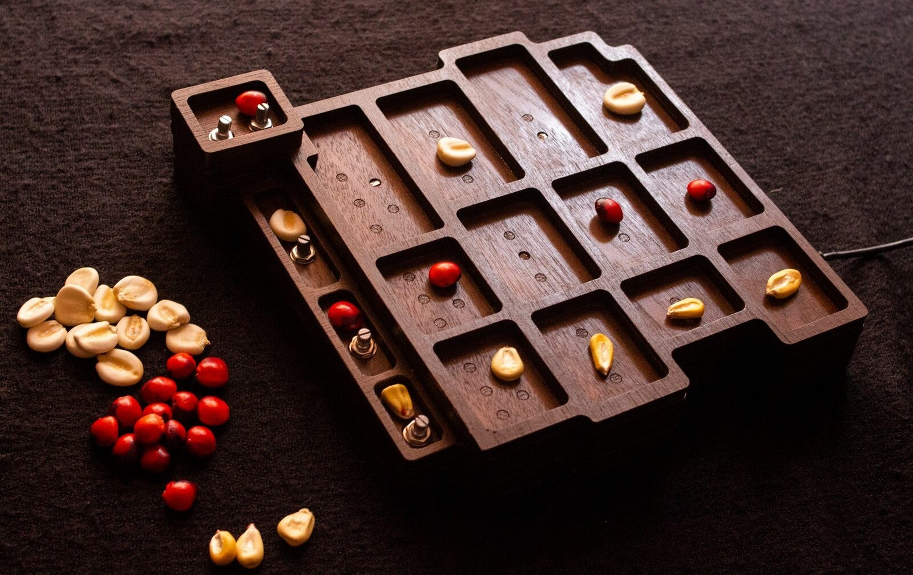
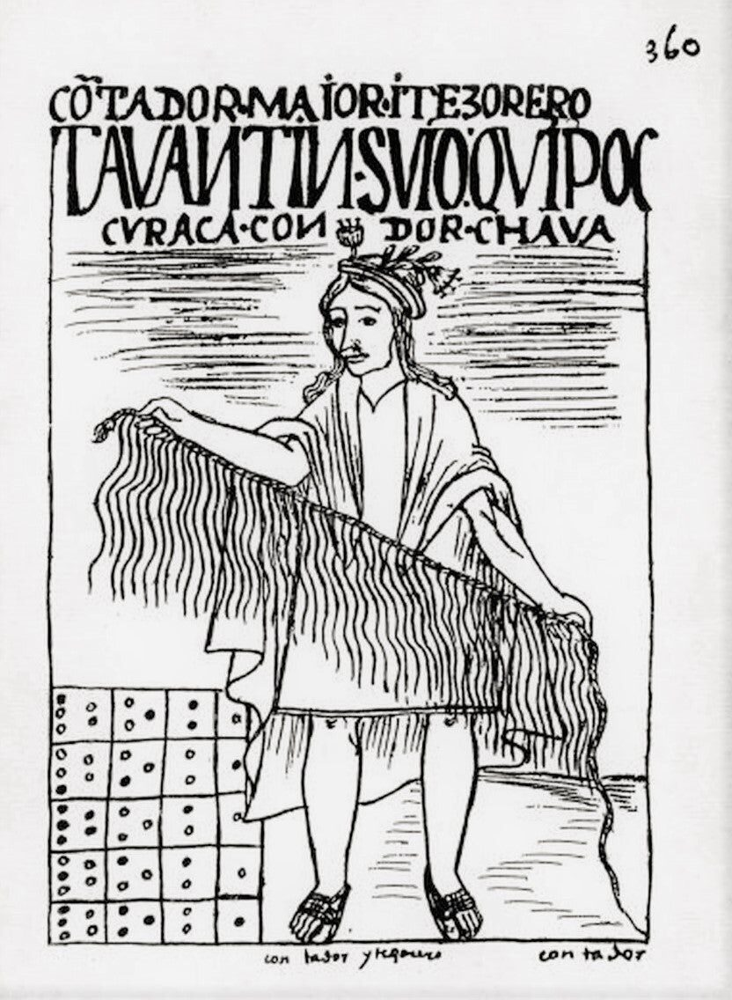
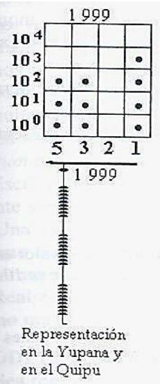
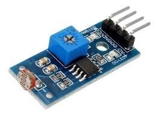
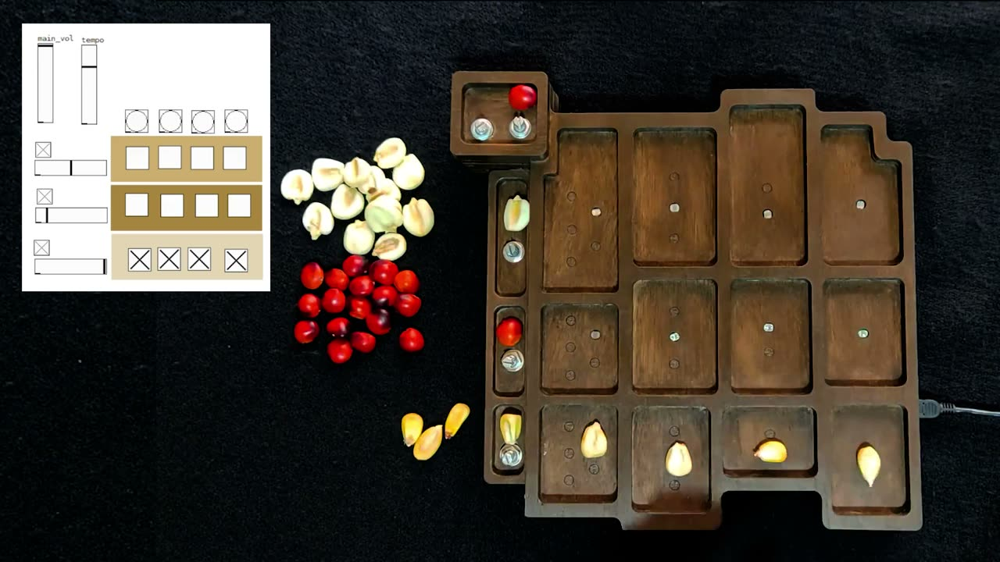
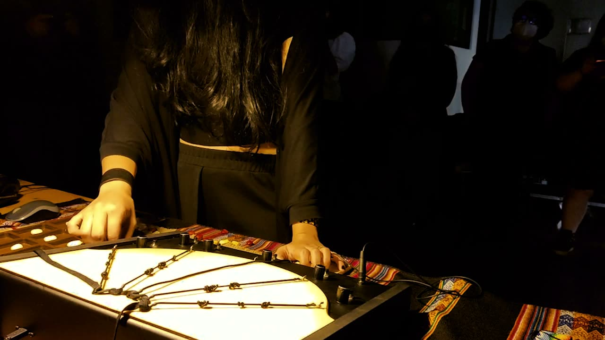
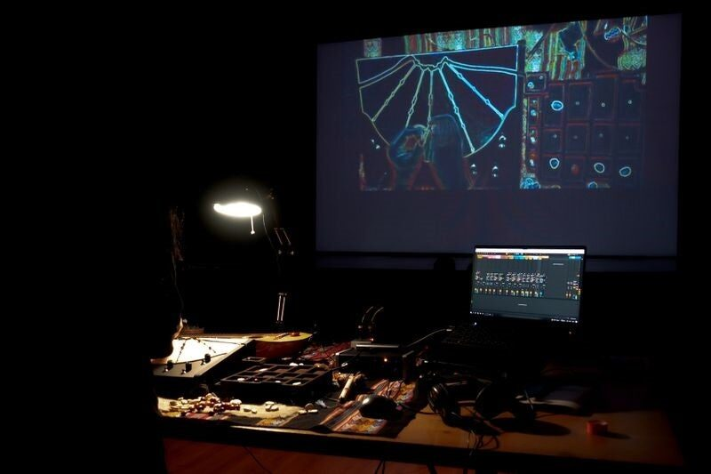

Kanchay_Yupana//: Tangible rhythm sequencer inspired by ancestral Andean technologies
Abstract
The Kanchay_Yupana// is an open-source NIME for the generation of rhythms, inspired by the Andean yupana: a tangible board similar to an abacus of different sizes and materials with a system of carved geometric boxes into which seeds or pebbles were disposed to perform arithmetic calculations, used since pre-colonial times.
As in the traditional artifact, the interaction of this new electronic yupana is based on the arrangement of seeds on a specially designed board with boxes, holes, and photoresistors. The shadow detected by the seeds' positioning sends real-time motion data in MIDI messages to Pure Data in a drum machine patch. As a result, percussion samples of Andean instruments fill pulses in a four-quarter beat, generating patterns that can be transformed live into different rhythms.
This interface complements the Electronic_Khipu_ (a previous NIME based on an Andean khipu) by producing the rhythmic component. This experience unites ancestral and contemporary technologies in experimental sound performance following the theoretical-practical research on the vindication of the memory in ancestral Andean technological interfaces made invisible by colonization, reusing them from a decolonial perspective in NIMEs.
Author Keywords
Decolonial Aesthetics, Yupana, Ancestral Andean Technologies, Rhythm Sequencer, Tangible Interfaces, Pure Data, Open Source.
CCS Concepts
•Applied computing → Sound and music computing; Performing arts; Media arts;
Introduction
This project is part of theoretical-practical research on the vindication of the memory contained in ancestral Andean technological interfaces made invisible by colonization, reusing them in new artistic processes related to experimental sound, NIMEs, and multimedia performance from a decolonial perspective.
This research began in 2019 with the production of the Electronic_Khipu_ a NIME presented at the 2020 conference, [1] [2] an instrument for interaction and experimental sound generation by weaving knots with conductive rubber cords encoding sound compositions based on an Andean khipu, an ancient textile computer used for the processing and transmission of information encrypted in knots and cords of cotton and wool.
The Kanchay_Yupana// (yupana of light in the Quechua language), is the second interface within this line of research, is an open-source electronic sequencer for rhythms production, inspired by the Andean yupana:

Ancient Andean Yupana
The yupana, (Image 1) whose name comes from the Quechua word "yupay" -which would translate to the verb to count- is also known as the Andean abacus, is a tangible calculator that was used to complement the khipus. This device was used for ritual purposes and also operated as a calculating tool in the past.
The yupana consists of a system of boxes in which colored stones or seeds were placed, which allowed to write down the ciphers in a complex model of numerical notation that even today is used in some schools in South America to teach mathematics. [3] [4] [5] [6] [7] [8]
The artist Lorenzo Sandoval argues:
“This technology was used to solve problems in accounting. The calculations were made through the movements of small beads —stones or seeds—from one section to another. Those below were units, then came the tens, hundreds, thousands, and finally, the tens of thousands. It was a problem of position resolved through the physical movement of its components. It was the equivalent of the electronic impulses that occur within a computer”. [9]
In ancient times, the khipu and the yupana were technologies that complemented each other and were used together. The numerical values that resulted from the calculation in the yupana were stored and codified in the knots of the khipus of numerical character. [3] [10] Some experts identify the yupana as a memory ram and the khipu as the hard disk of a computer that needs the body and mind to compute. [6] [9]


Electronic_Khipu_ and Kanchay_Yupana//
This research rescues the traditional interaction gestures of these interfaces to replicate them in the use of NIMEs, joining ancestral and contemporary technologies in an electronic interface that works as a tangible sequencer in a drum machine. Interaction, as in the traditional artifact, is based on the arrangement of seeds on a board, generating patterns that can be transformed into rhythms and other sonorities, completing the execution of the Electronic_Khipu_ for live performance (Image 2).
Related Work
Musical interfaces to Decolonize the future by looking at the past
In The Andean information age, Santillán and Troncone state:
While the ancient literacies of quipus are gone —at least in their original modalities, —the cosmologies that shaped this notation system are still alive, are still reinventing reality. The present is persistently inhabited by indigenous worlds. [12]
The contemporary updating of our roots while keeping them present is a way to decolonize them. Many artists today have been inspired by ancestral technologies of their territories of origin to claim them in current artistic expressions, and this has also reached the creation of NIMEs.
Hayes and Marquez-Borbon [13] already pointed out the need to adopt a critical approach at all levels raised in the recent NIME discourse in relation to non-hegemonic methodological approaches, diversity, inclusion, and accessibility has gained ground in recent years.
An issue inside the Latin American context that the recent LATAM NIME network [14] has also embraced to recognizing, identifying, and accepting the multiple realities and approaches as valid critical epistemologies outside the establishment1.
In the paper dedicated to the first part of this research with the Electronic_Khipu_, [1] [2] there is a brief review of projects within the NIME conference from its beginning until 2019, that have taken ancient traditional musical instruments from different parts of the world and reused them in new interfaces. In this way, I made a short genealogy of interfaces with high cultural character and historical value that, without the need to be marked within some "decolonial" label, are important to understand the place that has been taking this concept in recent years.
Following the NIME conference in 2021, it is worth mentioning the work meriting the Pamela Z Award for Innovation, Diversity, and Inclusion by João Tragtenberg, Gabriel Albuquerque, and Filipe Calegario. Their research on the inclusion of decolonial and inclusive conceptual tools such as Gambiarra and Techno-Vernacular Creativity to contribute to the NIME community has made a significant discussion on the validation of these methodologies emerging from the global south within the hegemonic western spaces. [15]
Specifically, in the field of Andean technologies applied to contemporary artistic expressions, also in 2021, the artist Paola Torres Núñez del Prado wrote and published The Technokhipumancers' Neokhipukamayoq Manifesto. This statement describes an incipient artistic current but with a long tradition, sustained in the realization of khipus, that nowadays is highly popular within new media arts. [16]
Torres Núñez del Prado -who also has done referential work with khipus to create her sound interfaces inspired by these devices2 has brought together in her manifesto to active artists to talk about the reinterpretation of these ancestral technologies in their practices.
With concrete relation to the yupana, the direct reference is inscribed in the generative art software created by Umberto Roncoroni3. His objective is to provide artistic solutions that can develop creativity through cultural identity based on the yupana implemented computationally. His study starts from the hypothesis of the numerical use reminiscent of the yupana with the Turing machine using its rules to produce generative music, among other artistic expressions. [17]
Formal references
Token-based Sequencers4 within which the Kanchay_Yupana// could be included, are not an unexplored ground within our field. Notable projects are Bubblegum Sequencer [18] by Hannes Hesse and Andrew McDiarmid or BeatBearing [19] by Peter Bennett and Sile O'Modhrain both physical step sequencers that work by placing balls in pre-configured holes to generate rhythms to tangible surfaces using different technologies. Also worth mentioning is Akito van Troye's DrumTop project, [20] another tangible step sequencer that transforms everyday objects into percussive musical instruments.
As recent references, there are Tquencer, [21] a tangible musical sequencer using overlays by Martin Kaltenbrunner and Jens Vetter, and LoopBlocks [22] by Andreas Förster and Mathias Komesker, an interface specially designed inside the Digital Musical Instruments accessible for schools with special educational needs and like the yupana, it works by photoresistors and Pure Data.
The Kanchay_Yupana//


Kanchay_Yupana// with Andean Corn and Huayruro seeds
Why a step sequencer in a yupana?
The yupana was first described by Guamán Poma in his corónica of 1615 [23] (Image 4 ) and later analyzed by many specialists, among whom we can find Radicati, [8] Moscovitch, [22] Chirinos, [6] Pacheco, [7] and recently Prem. [6] Its implementation has been the subject of many discussions, and to date, there is no consensus on its interpretation. [25]


Illustration of Guamán Poma of the kingdom accountant holding in his hands a khipu and in the lower left part the representation of a yupana.


Representation of the number 1999 in yupana and khipu, taken from Pacheco [7]
However, common to all theories is using seeds and a matrix of columns and rows boards to play or make mathematical operations. It is precisely the gesture of incorporating the body by placing the seeds to calculate in mind that is especially relevant to this project, even more of its original form of use5.
I have taken the initial interaction of the positioning of the seeds to produce a concrete action, in this case, to create rhythms, which, as we will see below, have been a fundamental part of the expressions within Andean music, having a close relationship with the new interface.
The Chilean Museum of Pre-Columbian Art musicologist, José Pérez de Arce, affirms the perfect adherence to a simple rhythm without abrupt variations, complications of redoubles, duplications, or changing figures, reveals another of the characteristic attributes of the indigenous music of South America. Moreover, these concrete mathematical beats create a ritual climate in shamanic ceremonies to enter a trance. [26]
Unlike the khipu that besides storing countable data could also encode literary information, [27] the yupanas are known for their mathematical and accounting function. Therefore, it is not difficult to reuse it or think of it as a possible rhythm generator if we transfer it to the current electronic music technologies. Behind this, one of the initial questions of this research is accompanied. How could be the computer music generated by the first known computing machines (in this case, the yupana and the khipu) sound if the processes of colonization had not stolen their importance and visibility in the history of technologies?
I consider my sound performance with the Electronic_Khipu_ as a ritual, and I was always looking for the accompaniment of a rhythm that I could generate live and help me to get involved with the audience in an aesthetic experience that will deeply resonate, even if the listeners are unaware of the context in which the pieces are inspired. The use of these twinned devices since ancient times helped me achieve it.
Returning to Pérez de Arce's study; indigenous music -from which in part I draw my inspiration when developing and playing my instruments- does not try to make a demonstration of skill or virtuosity with their art but to honor and offer to their divinities; it tries to create a bridge that unites their world with that of the gods. The music is not played only to provoke an aesthetic emotion but to awaken deep religious fervor and prepare a suitable climate to carry out complex rituals where reality is amplified by the ability of sound to transform everyday time into a mythical one. [26]
Technical Development
The interface (Image 3) consists of a wooden board of sixteen boxes and holes, with electronics composed of LDR digital modules, potentiometers, and a Teensy 2.0 board6. The interaction is produced by placing seeds in each of the boxes, making shadows on the photoresistors that are sent as MIDI messages to a Pure Data patch.
Inspired by the ancient yupanas described by Radicati [8] and compiled by Pacheco [7] similar to Image 1 I chose wood for its ease of prototyping. After studying the existing yupanas, I made a series of preliminary sketches and vectorized a layered design to produce pieces that laser cut and adhered in an overlapping arrangement, could form the entire structure of squares with different heights.
Thinking of low-cost manufacturing that would result in an interface of easy transportability, I made a 24 x 25 cm design. The holes are arranged in three rows consisting of four steps and an additional box for the general control.
Based on the structure of the one-seed-per-box yupana or Waman Puma Yupana see Image 5 [7] [22] where the placement of one seed in each box represents a particular cipher, I designed the Kanchay_Yupana// for a basic 3-instrument, 4-step drum machine. in this way, I keep the four columns configuration of the traditional yupana in the central area of the new instrument.
As can be seen in Image 3 and Video 1, there is an additional four slots row with different heights and sizes than the central area on the interface side. This row contains the control mechanisms of each sampled instrument.
The same holes and photoresistors system is used to pause or play the rhythm created and a potentiometer to loud each track. A higher box with two potentiometers is also used for the overall loudness and tempo, and an additional hole determines the device on/ off.
The name of the interface comes from the use of light for its performance.


Light Sensing Module LDR
Kanchay_Yupana// means yupana of light in Quechua. Each of the boxes contains a Light Sensing Module LDR7 (Image 6) to detect the shadow produced by placing the seed in the box, and potentiometers to control the volume of each instrument and tempo.
The modules were chosen over traditional components LDR for their price, reliability, ease of programming, and arrangement in the microcontroller by only using digital inputs that usually have more numbers in the microcontrollers on the market compared to analog inputs.
Additionally, because each module has a micro potentiometer that allows determining the threshold of light with which each component is activated or deactivated, it significantly simplified the electronic building of the whole interface.
The native Andean corn and huayruro seeds (in Image 3) are used to produce the shadows. According to research, these seeds were formerly used for the yupanas [8] and their size are optimal for interaction.
The microcontroller used is a Teensy 2.0 selected for its low cost, easy programming, and size. For this interface, it was programmed with teensyduino8 and the sketches of the example of the own controller for the output MIDI USB9.
The Teensy 2.0 microcontroller turns the Kanchay_Yupana// into a MIDI controller sending messages to any software-enabled to receive MIDI. In this case, to a Pure Data Extended10 patch with a simple drum machine of pre-recorded beats from Jonatan Carrasco's tutorial [27] adapted for the interface.
The patch receives each MIDI message produced by recognizing the shadow on the photoresistors arranged in each box. Thus, the generation and interaction occur in real-time, putting and removing seeds in each row, creating rhythms playing with the steps and tempo.
The interaction between the tangible interface and the Pure Data patch can be watched in Video 1, (also available at https://youtu.be/MPrPLPLASrw).

▶Kanchay_Yupana// interaction
The Kanchay_Yupana// in Live Performance
This instrument was designed to complement the performance of the Electronic_Khipu_. [1] [2] As I mentioned before, the yupana complemented the khipu in ancient times. The calculations resulting from the yupana were stored as encoded information in the knots of the khipus. In the premiere performance, as a ritual of gratitude, I wanted to continue the legacy using the same interaction; in this case, Kanchay_Yupana// is played to mark the rhythm to complement the experimental sound produced by the manipulation of the Electronic_Khipu_ by knotting its sensitive conductive rubber strings (Image 2).
The first performance, called Regreso a la tierra (return to the land) took place in the Cultural Center of Spain in Santiago, Chile, in which the prototype was developed11.
The yupana and the khipu were not used originally to make music (or at least as far as we know of these devices). Therefore, imagining their sounds is a speculative exercise that, by the context, has much influence on Andean music, and that is why I have programmed both instruments with sound textures reminiscent of some traditional sounds.
While the Electronic_Khipu_ is programmed to produce diverse sounds of experimental character and expressly linked to the conductivity and the performer-instrument relationship, [1] [2] the Kanchay_Yupana// contributes to generating a rhythm that can easily change during the performance marking different moments of intensity, or calm.
For this concert, it was essential for me to, due to the location and the opportunity, use the sounds of native Andean Chile. Consequently, I incorporated in the Pure Data patch sounds of the Kultrun, the Kaskawillas, and the Metawe from the sample library of Mapuche instruments of Juan Francisco Monsalve and Joaquín Salas12, whose sounds would be equivalent to a bass drum, Tom-tom, and rattles.
Technically, the use of both instruments live was quite easy and intuitive, changing the rhythms during the performance and being able to detach in part from the direct interaction with the computer helped to transform the performance into a ritual climate in which I could connect with the audience in a unique way.
A short excerpt of the premiere performance on Video 2. Also available at https://youtu.be/34qju60bdX4.

▶Regreso a la Tierra (Return to the land) Performance excerpt
I have used the same Electronic_Khipu_ system of visuals performance. This live coding aesthetic contributes to the audience understanding the weaving processes of the Electronic_Khipu_ and the tangible programming of rhythms in the Kanchay_Yupana// and associating them with the sound produced. Technically a camera takes in real-time the image and uses vvvv13 software with dedicated image filters, creating a colorful linear image on a black background as a living drawing. [1] [2] (Image 7)


Performance visual display
Conclusions and future work
In this paper, I have presented Kanchay_Yupana//, an open-source NIME in a tangible rhythm sequencer inspired by the Andean yupana. It was created to complement the performance of the Electronic_Khipu_, another instrument based on Andean pre-colonial technologies, taking advantage of the ancestral twinning that these two devices had in the past for the accounting now turned into objects for the sound expression.
As a recent prototype, it is likely to continue to study improvements to maximize and improve its use in live performance, such as adding one more row with LEDs that indicate the step in real-time, enlarging the boxes dedicated to the controls for better ergonomics, or adding more holes in order to create more steps to produce more complex rhythms.
For future development, I study to take as a reference, the structure of the LoopBlocks project. [22] I will integrate the Pure Data patch into a Raspberry Pi inside the box to make it an autonomous instrument, independent of a computer, and develop ways to change sampled instruments inside the Pure Data patch with tangibles tools provided by the interface.
Kanchay_Yupana// was initially thought to be an open-source instrument. To fulfill this objective, a manual for free download is being elaborated to be published soon, with a short memory of the project, details of the prototype fabrication, sketches, assembly instructions, and code used.
Although it was not an initial purpose, during the prototyping stage, I have been able to observe the accessibility of the instrument for people, resulting in an interface with immediate understanding and a fast-learning curve. Furthermore, it can be a playful tool for people not necessarily involved or with musical knowledge. Therefore, this feature could be an element of study for its optimization and promotion of participation in the future.
I will continue to explore the capacity of Andean ancestral technologies in NIMEs as a strategy of decolonization in the processes of contemporary sound expression.
Acknowledgments
Thanks to Natasha Pons, the CCESantiago team, and friends in Chile for their kindness and affection during my residence in Abya Yala, Consorci de Museus de la Comunitat Valenciana for their support, and all the reviewers and meta-reviewer for their thoughtful comments that helped me to think beyond the pages of this manuscript.
Ethics Statement
Previous instruments with a parallel interaction nature, such as LoopBlocks [22] have shown essential values and features in matters of accessibility and inclusion that, although this was not the main objective of this project, can be exploited for future development.
The Kanchay_Yupana// has been designed to be an open-source Interface; however, the Teensy board is used, whose development is not entirely open. Nevertheless, it was chosen for its low cost (comparable to an Arduino) and advanced features that improve performance compared to an open-source board of a similar category.
This project has been supported and funded by Cultura Resident, an artistic residency program of the Consorci de Museus de la Comunitat Valenciana in partnership with the Cultural Center of Spain in Santiago, Chile. No conflict of interest has occurred.
Content of this paper will be part of the master thesis " Knotting the memory//Encoding the khipu_: Reuse of ancestral Andean technologies as new experimental sound interfaces in the framework of the decoloniality, art, and science relationship", to be read in June 2022 at the Interface Cultures Master program of the Kunstuniversität Linz, Austria.
Footnotes
This matter was expanded and discussed at the workshop "Towards a Latin American NIME Research Community" that took place at the 18th Brazilian Symposium on Computer Music. The ideas and first conclusions of this meeting can be found in the paper "Being (A)part of NIME: Embracing Latin American Perspectives" that will be published at this year's NIME conference.
↩- ↩
- ↩
- ↩
To bring the interested reader closer to one of the original functioning yupana theories, like Professor Roncoroni for his work with the yupana and generative art, [17] I have opted for the theory of Dhavit Prem [6] for the interpretation of the function of the yupana of Guamán Poma.
In this interpretation, the yupana is constituted in a matrix of 4 fixed columns representing the numbers 1, 2, 3, and 5 and a number of rows arranged according to the user's needs, representing the units, the tens, the hundreds, the thousands, and so on (theoretically there is no limit).
To form a number, you put pebbles or seeds in the corresponding squares of the board, as in image 5. See references for more information.
↩- ↩
https://www.instructables.com/LDR-Sensor-Module-Users-Manual-V10/
↩- ↩
- ↩
- ↩
- ↩
- ↩
- ↩
Citations
Cadavid Hinojosa, L. P. (2020). Electronic_Khipu_: Thinking in Experimental Sound from an Ancestral Andean Interface. Computer Music Journal, 44(2–3), 39–54. https://doi.org/10.1162/comj_a_00561
↩Cadavid, L. P. (2020). Knotting the memory//Encoding the Khipu_: Reuse of an ancient Andean device as a NIME. https://doi.org/10.5281/ZENODO.4813495
↩Museo Chileno de Arte Precolombino. (2018). Yupanas And Pallares: Stones To Calculate Retrieved from http://precolombino.cl/en/exposiciones/exposiciones-temporales/fiesta-de-las-imagenes-en-los-andes/sistemas-de-comunicacion/como-anotaban-y-sumaban/yupanas-y-pallares/
↩Chirinos, A. (2013). Quipus del Tahuantinsuyo. Curacas, Incas y su saber matemático en el siglo XVI. Commentarios.
↩Rodriguez, S. R. (2012). El origen preamericano de la Informática. Archivo Histórico de Guayas
↩Prem, D. (2018). La yupana Inka. Olazo Editor.
↩Pacheco, R. O. (1999). Del quipu incaico a la yupana: el computador ancestral. CEPDI
↩Radicati di Primeglio, C. (1979). El sistema contable de los Incas. Yupana e Quipu. Librería Studium.
↩Sandoval, L. (2019). Shadow Writing (Algoritmo/Quipu) Retrieved from https://a-desk.org/en/magazine/shadow-writing-algoritmo-quipu/
↩Museo Chileno de Arte Precolombino. (2018). Yupanas And Pallares: Stones To Calculate Retrieved from http://precolombino.cl/en/exposiciones/exposiciones-temporales/fiesta-de-las-imagenes-en-los-andes/sistemas-de-comunicacion/como-anotaban-y-sumaban/yupanas-y-pallares/
↩Vegas, G. (n.d.) ¿Por qué Google y el MALI digitalizaron decenas de khipus? Retrieved from https://cosas.pe/cultura/218910/por-que-google-y-el-mali-digitalizaron-decenas-de-khipus/
↩Prem, D. (2018). La yupana Inka. Olazo Editor.
↩Sandoval, L. (2019). Shadow Writing (Algoritmo/Quipu) Retrieved from https://a-desk.org/en/magazine/shadow-writing-algoritmo-quipu/
↩Santillán, O. & Troncone, A. (2020). The Andean Information Age. Bom Dia Books.
↩Hayes, L., & Marquez-Borbon, A. (2020). Nuanced and Interrelated Mediations and Exigencies (NIME): Addressing the Prevailing Political and Epistemological Crises. https://doi.org/10.5281/ZENODO.4813459
↩Who are we? - Latin American NIME Research Network. (2021). Retrieved from https://latam.nime.org/
↩Cadavid Hinojosa, L. P. (2020). Electronic_Khipu_: Thinking in Experimental Sound from an Ancestral Andean Interface. Computer Music Journal, 44(2–3), 39–54. https://doi.org/10.1162/comj_a_00561
↩Cadavid, L. P. (2020). Knotting the memory//Encoding the Khipu_: Reuse of an ancient Andean device as a NIME. https://doi.org/10.5281/ZENODO.4813495
↩- ↩Tragtenberg, J., Albuquerque, G., & Calegario, F. (n.d.). Gambiarra and Techno-Vernacular Creativity in NIME Research. NIME 2021. NIME 2021. https://doi.org/10.21428/92fbeb44.98354a15
Torres Núñez del Prado, P. (2021). The Technokhipumancers' Neokhipukamayoq Manifesto Retrieved from https:// https://khipumantes.github.io/index.html
↩Roncoroni, O. U. (2019) Using the Inka's Calculator for Generative Art, In Proceedings of the XXII Generative Art Conference Retrieved from https://www.Generativeart.com/GA2019_web/66_UmbertoRoncoroni_168x240.pdf
↩Hesse, H., & McDiarmid, A. (2008). The Bubblegum Sequencer. In Proceedings of the Conference on Human Factors in Computing Systems. Retrieved from http://www.backin.de/gumball/Bubblegum%20Sequencer.pdf
↩Bennett, P., & O’Modhrain, S. (2008). The beatbearing: A tangible rhythm sequencer. In Proceedings of the Nordic Conference on Computer-Human Interaction. Retrieved from https://www.peteinfo.com/papers/Pete2008BeatBearing.pdf
↩Troyer, A. van. (2012). DrumTop: Playing with Everyday Objects. In Proceedings of the International Conference on New Interfaces for Musical Expression. Retrieved from http://doi.org/10.5281/zenodo.1178441
↩Kaltenbrunner, M., & Vetter, J. (2018). Tquencer: A Tangible Musical Sequencer Using Overlays. In Proceedings of the International Conference on Tangible, Embedded, and Embodied Interaction (pp. 429–434). Retrieved from https://dl.acm.org/doi/10.1145/3173225.3173233
↩- ↩Förster, A., & Komesker, M. (n.d.). LoopBlocks: Design and Preliminary Evaluation of an Accessible Tangible Musical Step Sequencer. NIME 2021. NIME 2021. https://doi.org/10.21428/92fbeb44.f45e1caf
Guamán Poma de Ayala, F. [1615] (1993). Nueva coronica y buen gobierno. Ciudad de México: Fondo de Cultura Económica
↩Radicati di Primeglio, C. (1979). El sistema contable de los Incas. Yupana e Quipu. Librería Studium.
↩Moscovich, V. (2006). Yupana, tabla de contar inca. Revista andina, (43), 93-127.
↩Prem, D. (2018). La yupana Inka. Olazo Editor.
↩Pacheco, R. O. (1999). Del quipu incaico a la yupana: el computador ancestral. CEPDI
↩Prem, D. (2018). La yupana Inka. Olazo Editor.
↩Setlak, M. & Moscovich, V. & Hyland, S. & Milillo, L. (2020). Quipus y Quipucamayoc. Codificación y administración en el antiguo Perú. EY PERU/APUS GE
↩Pérez de Arce, J. & Mercado, C. (1995). Sonidos de América. Museo Chileno de Arte Precolombino.
↩Mali – Museo de arte de Lima. (2020) Khipus. Nuestra historia en nudos Retrieved from https://Mali.pe/wp-content/uploads/2020/11/Khipus.-Nuestra-historia-en-nudos-folleto-de-mano.pdf
↩Pérez de Arce, J. & Mercado, C. (1995). Sonidos de América. Museo Chileno de Arte Precolombino.
↩Radicati di Primeglio, C. (1979). El sistema contable de los Incas. Yupana e Quipu. Librería Studium.
↩Pacheco, R. O. (1999). Del quipu incaico a la yupana: el computador ancestral. CEPDI
↩Pacheco, R. O. (1999). Del quipu incaico a la yupana: el computador ancestral. CEPDI
↩Moscovich, V. (2006). Yupana, tabla de contar inca. Revista andina, (43), 93-127.
↩Radicati di Primeglio, C. (1979). El sistema contable de los Incas. Yupana e Quipu. Librería Studium.
↩Carrasco, J. (2020) Caja de ritmos parte 1 Retrieved from https://youtu.be/P6E2o0ALMAI
↩Cadavid Hinojosa, L. P. (2020). Electronic_Khipu_: Thinking in Experimental Sound from an Ancestral Andean Interface. Computer Music Journal, 44(2–3), 39–54. https://doi.org/10.1162/comj_a_00561
↩Cadavid, L. P. (2020). Knotting the memory//Encoding the Khipu_: Reuse of an ancient Andean device as a NIME. https://doi.org/10.5281/ZENODO.4813495
↩Cadavid Hinojosa, L. P. (2020). Electronic_Khipu_: Thinking in Experimental Sound from an Ancestral Andean Interface. Computer Music Journal, 44(2–3), 39–54. https://doi.org/10.1162/comj_a_00561
↩Cadavid, L. P. (2020). Knotting the memory//Encoding the Khipu_: Reuse of an ancient Andean device as a NIME. https://doi.org/10.5281/ZENODO.4813495
↩Cadavid Hinojosa, L. P. (2020). Electronic_Khipu_: Thinking in Experimental Sound from an Ancestral Andean Interface. Computer Music Journal, 44(2–3), 39–54. https://doi.org/10.1162/comj_a_00561
↩Cadavid, L. P. (2020). Knotting the memory//Encoding the Khipu_: Reuse of an ancient Andean device as a NIME. https://doi.org/10.5281/ZENODO.4813495
↩- ↩Förster, A., & Komesker, M. (n.d.). LoopBlocks: Design and Preliminary Evaluation of an Accessible Tangible Musical Step Sequencer. NIME 2021. NIME 2021. https://doi.org/10.21428/92fbeb44.f45e1caf
- ↩Förster, A., & Komesker, M. (n.d.). LoopBlocks: Design and Preliminary Evaluation of an Accessible Tangible Musical Step Sequencer. NIME 2021. NIME 2021. https://doi.org/10.21428/92fbeb44.f45e1caf